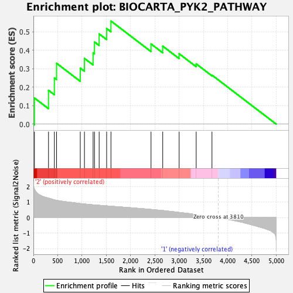
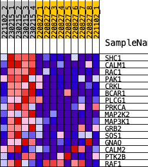
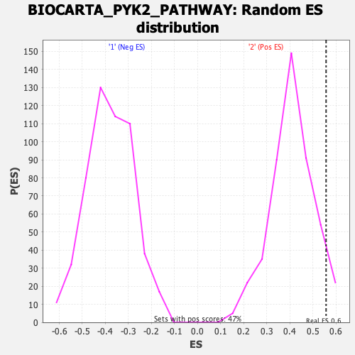

| | | Dataset | norm_counts_forGSEA.Phenotype.cls#2_versus_1.Phenotype.cls#2_versus_1_repos |
| Phenotype | Phenotype.cls#2_versus_1_repos |
| Upregulated in class | 2 |
| GeneSet | BIOCARTA_PYK2_PATHWAY |
| Enrichment Score (ES) | 0.5575829 |
| Normalized Enrichment Score (NES) | 1.3571386 |
| Nominal p-value | 0.061965812 |
| FDR q-value | 0.87251884 |
| FWER p-Value | 0.732 |
Table: GSEA Results Summary

Fig 1: Enrichment plot: BIOCARTA_PYK2_PATHWAY
Profile of the Running ES Score & Positions of GeneSet Members on the Rank Ordered List
| SYMBOL | RANK IN GENE LIST | RANK METRIC SCORE | RUNNING ES | CORE ENRICHMENT | | 1 | SHC1 | 21 | 1.846 | 0.1414 | Yes |
| 2 | CALM1 | 311 | 1.262 | 0.1830 | Yes |
| 3 | RAC1 | 432 | 1.150 | 0.2497 | Yes |
| 4 | PAK1 | 477 | 1.120 | 0.3292 | Yes |
| 5 | CRKL | 965 | 0.908 | 0.3032 | Yes |
| 6 | BCAR1 | 1051 | 0.880 | 0.3555 | Yes |
| 7 | PLCG1 | 1229 | 0.825 | 0.3852 | Yes |
| 8 | PRKCA | 1258 | 0.820 | 0.4442 | Yes |
| 9 | MAP2K2 | 1354 | 0.796 | 0.4880 | Yes |
| 10 | MAP3K1 | 1508 | 0.758 | 0.5171 | Yes |
| 11 | GRB2 | 1597 | 0.737 | 0.5576 | Yes |
| 12 | SOS1 | 2422 | 0.528 | 0.4339 | No |
| 13 | GNAQ | 2663 | 0.458 | 0.4219 | No |
| 14 | CALM2 | 3001 | 0.335 | 0.3807 | No |
| 15 | PTK2B | 3352 | 0.196 | 0.3260 | No |
| 16 | RAF1 | 3677 | 0.054 | 0.2652 | No |
Table: GSEA details [plain text format]

Fig 2: BIOCARTA_PYK2_PATHWAY
Blue-Pink O' Gram in the Space of the Analyzed GeneSet

Fig 3: BIOCARTA_PYK2_PATHWAY: Random ES distribution
Gene set null distribution of ES for BIOCARTA_PYK2_PATHWAY